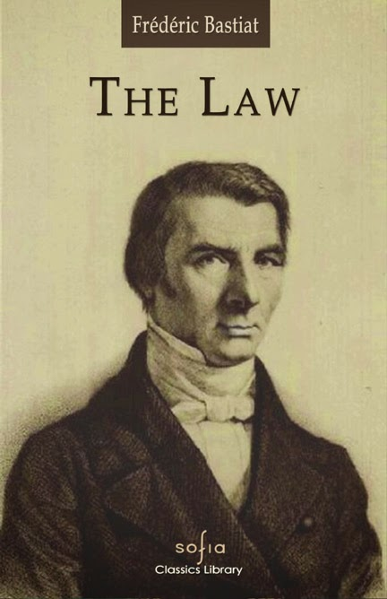

# A Lei
O que é então a lei? É a organização coletiva do direito individualde legítima defesa.Cada um de nós tem o direito natural, recebido de Deus, de defender sua própria pessoa, sua liberdade, sua propriedade. Estes são ostrês elementos básicos da vida, que se complementam e não podem ser compreendidos um sem o outro. E o que são nossas faculdades senão um prolongamento de nossa individualidade? E o que é a propriedade senão uma extensão de nossas faculdades? Se cada homem tem o direito de defender — até mesmo pela força — sua pessoa, sua liberdade e sua propriedade, então os demais homens têm o direito de se concertarem, de se entenderem e de organizarem uma força comum para proteger constantemente esse direito. O direito coletivo tem, pois, seu princípio, sua razão de ser, sua legitimidade, no direito individual. E a força comum, racionalmente, não pode ter outra finalidade, outra missão que não a de proteger as forças isoladas que ela substitui. Assim, da mesma forma que a força de um indivíduo não pode, legitimamente, atentar contra a pessoa, a liberdade, a propriedade de outro indivíduo, pela mesma razão a força comum não pode ser legitimamente usada para destruir a pessoa, a liberdade, a propriedade dos indivíduos ou dos grupos. E esta perversão da força estaria, tanto num caso como no outro, em contradição com nossas premissas. Quem ousaria dizer que a força nos foi dada, não para defender nossos direitos, mas para destruir os direitos iguais de nossos irmãos? E se isto não é verdade para cada força individual, agindo isoladamente; como poderia sê-lo para a força coletiva, que não é outra coisa senão a união das forças isoladas? Portanto, nada é mais evidente do que isto: a lei é a organização do direito natural de legítima defesa. É a substituição da força coletiva pelas forças individuais. E esta força coletiva deve somente fazer o que as forças individuais têm o direito natural e legal de fazerem: garantir as pessoas, as liberdades, as propriedades; manter o direito de cada um; e fazer reinar entre todos a JUSTIÇA